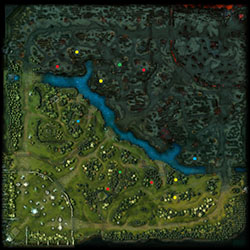
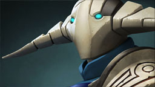
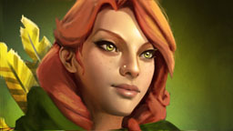
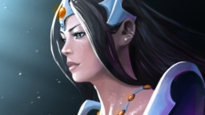

Dota 2 is a game in a new style of games that is becoming quite popular on the internet these days known as a MOBA (Multiplayer online Battle Arena). If you have never played a MOBA, entering a game for your first time can be very very intimidating, because a MOBA is a very different experience than any other type of game. If this small review of mine, I'm going to attempt to cover the basics of Dota. And when I say basics... I mean the basic basics. If you want a more in depth guide, here's a few good links to help you out.
Welcome to Dota, You Suck Heroes Guide Alt-Tab Guide to Dota 2And for anyone who just wants the quickie explanation of what the heck is Dota 2, I would highly recommend this video:
DotA in :60 - How to play Dota 2Dota is a five on five battle. Each team consists of five heroes which all start at level one. The Radiant team starts at the lower left of the map and the Dire team starts in the upper right. All heroes begin the game at level one and are honestly pretty weak at the start. Their power increases by killing either the other team's heroes or the computer controlled Creeps. The Creeps run down the little paths you can see on the map (these are called lanes, by the way) and if left to their own devices, the Radiant and Dire creeps would cancel eachother out where their territories meet.
Now before I overload you with information, let me tell you the point of the game. At each team's base, there is something called the Ancient. Each team is defending their Ancient because if this goes down, then it's gameover. So each team must fight through the enemy towers, creeps, and heroes and destory the other team's Ancient. Sounds simple right? WRONG! Matches in Dota last on average 45 minutes and some can last even longer than that! But the joy that feels your soul when the Ancient collaspes (assuming it's the enemy's and not yours) is undescribable. Now let's get into some more details and explain a few things.
If you clicked that "Heroes Guide" link above, you'll have noticed that there are a LOT of heroes in Dota. Each hero has different strengths and weakness as well as four unique skills or abilities. As you can imagine, these can be a little confusing to wrap your head and keep track of all those skills. But worry not fair player, you don't need to know all the skills in the game to play. And the game does have in-game helps to explain your characters abilities. For a more in depth explanation of skills and how they were, click that Heroes Guide above and choose a hero to read about their skills. As I stated above, each hero starts at level one but can level up through gaining experience. But how does one gain experience? Simple.. kill stuff. At the start of the game, the best thing to do is kill enemy creeps. Just follow your creeps into battle, hang back, let your creeps do the damage, then you move in for the kill. Getting that last hit and killing a creep is known as "Last Hitting" and it's essential to playing Dota. Last Hitting a creep gives you extra experience and also gold which can be spent on items at the shops. I won't go into shops and items in this guide due to the fact that there's just too many. But if you want a good guide about what items to get for the hero you're playing, click that link above to go to the Alt-Tab Guide to Dota.
  Above are four heroes that I believe would be good for beginners. From left to right, they are Sven, Lina, Windrunner, and Mirana. Since none of these heroes are TOO dependant on items, they are great for beginners. I recommend Windrunner personally because she can play many different roles and is pretty easy to play with once you play with her skills a little.
I won't spend too much time on these little guys. The only thing you need to know about them is they are fodder for your inner fire. Only there to be slaughter by the heroes so they can gain their full potential. Ok... putting it that way may be a little harsh, but you get my point. These little cuddly guys only exist so that the heroes on either team have something else to beat up on other than the other team's heroes. Last hitting creeps is essential to your survival so it will be one of the first things you learn how to do in Dota. Oh.. that and feeding the other team. You'll do that a lot too at first. Feeding means dying a lot to the hand of the other team, "feeding" them experience and gold. But don't be discouraged, feeding is a natural part of learning Dota. It happens. And when it does, take a deep breath and move on. It is a game after all, so have fun and don't worry about it.
The last thing I'll talk about before wrapping up is the Towers. If you look at the image to the right, you'll see the Radiant tower to the left side and the Dire tower to the right side. These towers exist within the lanes on either team. There are six in lanes (two top lane, two middle lane, and two bottom lane) and then many more within the enemy base. Towers will attack heroes on sight and are not something to pick a fight with at level one and most certainly not by yourself. At levels 1-5, a tower will kill a hero no problem, so stay away from these things until you're ready and you have a team mate or two with you. I would love to say that you can just avoid the towers and sneak into the enemy base... but unfortunately you must destory the towers to even be able to attack the enemy base. Trust me... I tried sneaking around once and started attacking buildings inside the base. Not only did I die, but the three or four attacks I got off before I did die had absolutely no effect. So yea, the towers in lane have to be destoryed first.
Hopefully I didn't confuse you too much. As I said before, at first glance (and second and third glances), Dota 2 can seem like an impossible game to wrap your head around. But it's surprising how quickly you learn. Yea, sure the learning curve is a little steep, but you conquer it pretty quick. I can't say that I'm the best player or even that I'm a good player, but with the help of the guides I've linked to above, the game becomes a lot easier to approach. Now I guess I did call this a review so I suppose I should give it a rating... well here we go.
4.5 out of 5
4 out of 5
4 out of 5
Posted: May 11th, 2013